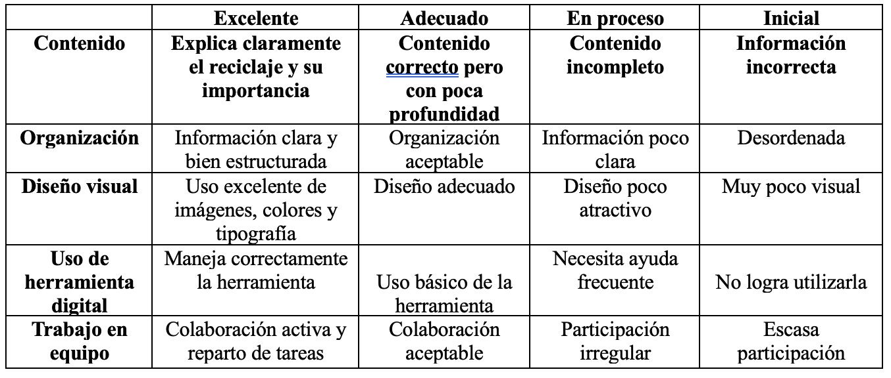
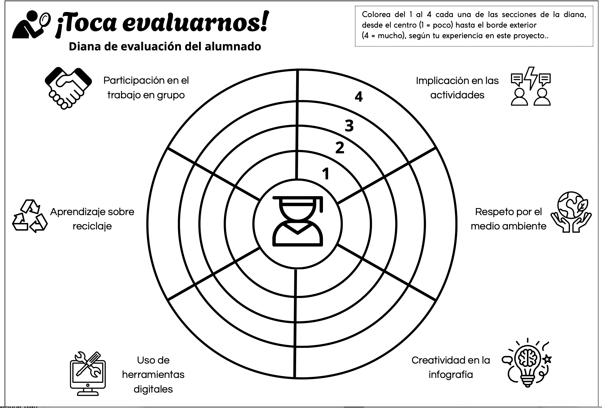

Instrumentos de Evaluación
EcoReto: nos movemos por un planeta más limpio
El proyecto interdisciplinar “EcoReto: nos movemos por un planeta más limpio”, dirigido al alumnado de 6º de Educación Primaria, incorpora diferentes instrumentos de evaluación con el objetivo de recoger información variada sobre el proceso de aprendizaje del alumnado.
Siguiendo un enfoque de evaluación formativa y continua, se utilizarán distintos instrumentos que permitan valorar tanto el producto final como el proceso de aprendizaje, la participación del alumnado y su reflexión sobre el propio aprendizaje.
Los instrumentos seleccionados son:
· Rúbrica de evaluación de la infografía digital.
· Diana de autoevaluación del alumnado.
· Cuestionario de reflexión final.
Rúbrica
Qué se evaluará
Este instrumento se utilizará para evaluar el producto final del proyecto, que consiste en la elaboración de una infografía digital de concienciación sobre el reciclaje, creada por el alumnado mediante Canva.
La rúbrica permitirá evaluar aspectos relacionados con:
Comprensión del contenido sobre reciclaje y sostenibilidad.
Organización y claridad de la información.
Uso adecuado de recursos visuales.
Creatividad y capacidad comunicativa.
Uso responsable de herramientas digitales.
Cuando se utilizará
Se aplicará en la sesión 6, durante la presentación de las infografías al resto del alumnado.
El docente utilizará la rúbrica para valorar cada trabajo, pero también se compartirá previamente con el alumnado para que conozca los criterios de evaluación.
Adjunto imagen de la rúbrica

Qué datos obtendré
La rúbrica permitirá obtener información sobre:
el grado de comprensión del contenido ambiental
el desarrollo de la competencia digital
la capacidad de comunicar información de forma visual
Cómo analizaré los datos
Los resultados permitirán identificar:
dificultades en la comprensión de conceptos ambientales
problemas en el uso de herramientas digitales
diferencias en la participación del trabajo cooperativo
Esta información servirá para mejorar futuras actividades y reforzar los contenidos que presenten mayores dificultades.
Diana de autoevaluación.
Qué se evaluará
La diana de evaluación permitirá al alumnado reflexionar sobre su propio aprendizaje durante el proyecto.
Este instrumento fomenta la metacognición, ayudando al alumnado a identificar sus fortalezas y aspectos a mejorar.
Los aspectos que evaluarán serán:
participación en el trabajo en grupo
aprendizaje sobre reciclaje
uso de herramientas digitales
implicación en las actividades
respeto por el medio ambiente
Cuando se utilizará
Se aplicará al finalizar el proyecto (sesión 6) tras la presentación de los trabajos.

Qué datos obtendré
Este instrumento permitirá recoger información sobre:
la percepción del alumnado sobre su aprendizaje
el nivel de implicación en el proyecto
la confianza en el uso de herramientas digitales
Cómo analizaré los datos
El análisis de las dianas permitirá detectar:
alumnado que necesita más apoyo en el trabajo cooperativo
dificultades en el uso de herramientas digitales
niveles de motivación del alumnado
Esta información permitirá ajustar futuras propuestas metodológicas.
Cuestionario
El tercer instrumento será un cuestionario digital elaborado mediante
Google Forms.
Qué se evaluará
El cuestionario permitirá recoger información sobre:
los conocimientos adquiridos sobre reciclaje
la valoración del proyecto por parte del alumnado
las dificultades encontradas durante el trabajo
Cuando se utilizará
Se realizará al finalizar el proyecto, después de la presentación de los trabajos.
Ejemplos de preguntas
¿Qué has aprendido sobre el reciclaje durante este proyecto?
¿Qué actividad te ha resultado más interesante?
¿Has tenido dificultades al usar herramientas digitales?
¿Crees que ahora reciclas mejor que antes?
¿Qué mejorarías del proyecto?
Qué datos obtendré
El cuestionario permitirá obtener información sobre:
el aprendizaje real del alumnado
la percepción del proyecto
posibles dificultades técnicas
Cómo analizaré los datos
Los resultados del cuestionario se analizarán a partir de:
respuestas cerradas (porcentajes)
respuestas abiertas (análisis cualitativo)
Estos datos servirán para mejorar futuras situaciones de aprendizaje y adaptar las actividades al nivel del alumnado.
CONCLUSIÓN
El uso combinado de estos instrumentos permite realizar una evaluación más completa del proceso de aprendizaje, teniendo en cuenta tanto el producto final como la participación, la reflexión del alumnado y la adquisición de conocimientos.
Además, estos instrumentos favorecen una evaluación formativa, que proporciona retroalimentación al alumnado y permite mejorar el proceso de enseñanza-aprendizaje.